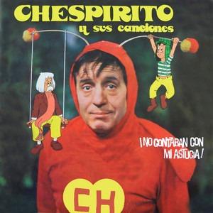
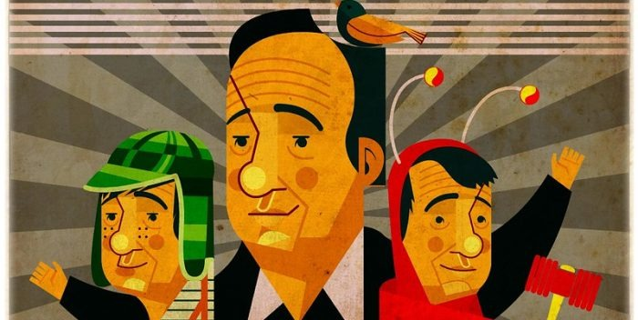
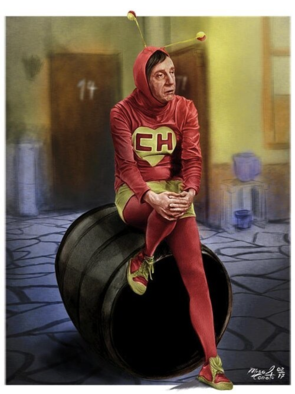

EXTRAS
ALGO MAS ANTES DE LA DESPEDIDA...
UN ALBUN MUSICAL...
El álbum no es solo una recopilación de canciones, sino una extensión de los valores de la serie. Cada pista fue compuesta o supervisada por el propio Gómez Bolaños, utilizando ritmos alegres, orquestaciones infantiles y letras que refuerzan mensajes de optimismo, amistad y honestidad.

Dato Curioso:
Muchas de las canciones del álbum se presentaron primero como números musicales dentro de los episodios especiales de la serie, convirtiéndose en el "broche de oro" para misiones donde la moraleja era tan importante como la comedia.

GRACIAS POR VER

¿Qué te pareció el reporte del Chapulín Colorado?
Ayúdanos a mejorar nuestras futuras investigaciones interdimensionales.